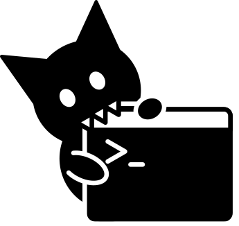

<!DOCTYPE html>
<html lang="en">
<head>
    <meta charset="UTF-8">
    <title>めもりあん - Webサイト上のコードスニペットをメモするツール</title>
    <link href="https://fonts.googleapis.com/earlyaccess/roundedmplus1c.css" rel="stylesheet" />
    <style>
body{
    font-family:'Lucida Grande','Hiragino Kaku Gothic ProN', 'ヒラギノ角ゴ ProN W3',Meiryo, メイリオ, sans-serif;
    font-size: 12pt;
}
article{
    width: 900px;
    margin: 0 auto;
}

footer{
    margin-top: 30px;
    padding: 10px;
    text-align: center;
    height: 50px;
    background-color: gray;
    color: white;
}

.title_logo{
    margin-top: 10px;
    margin-bottom: 15px;
}

h1{
    font-size: 25pt;
    font-family: "Rounded Mplus 1c";
}

h2{
    width: 100%;
    text-align: center;
    font-family: "Rounded Mplus 1c";
}

.top_logo{
    text-align: center;
}

.section{
    border-style: dotted;
    border-width: 1px 0 0 0;
    margin-top: 20px;
}

.center{
    text-align: center
}

.img_outer{
    margin: 30px auto;
    text-align: center;
    width: 700px;
    font-size: 10pt;
}

.img_outer img{
    border: solid 1px black;
    width: 100%;
    border-radius: 8px;
}

.notice{
    background-color: whitesmoke;
    padding: 20px;
    border: solid 1px black;
    border-radius: 5px;
    margin: 10px 0;
}

.avatar_outer{
    width: 80px;
    height: 80px;
    border: 1px solid black;
    border-radius: 40px;
    overflow: hidden;
    margin: 10px auto;
}

.avatar_outer img{
    width: 100%;
}


.latest_app{
    font-size: 9pt;
    background-color: darkgray;
    color: white;
    display: inline-block;
    padding: 3px 5px;
    border-radius: 3px;
}

.alpha_app{
    font-size: 9pt;
    background-color: gray;
    color: white;
    display: inline-block;
    padding: 3px 5px;
    border-radius: 3px;
}

.marker_app{
    display: inline-block;
    margin-left: 20px;
}

.dl_list{
    list-style-type: none;
    margin: 20px 30px;
    padding: 0;
}

.dl_list li{
    border-style: dotted;
    border-color: gray;
    border-width: 0 0 1px 0;
    padding: 6px 0px;
    margin: 0;
}

.dl_list li:last-child{
    border-style: none;
}

.license{
    background-color: #f9ead1;
    border-color: black;
    border-style: solid;
    border-radius: 3px;
    border-width: 1px;
    font-size: 9pt;
    padding: 15px;
    margin: 10px 80px;
    text-align: left;
    white-space: pre-wrap;
}

h3{
    text-align: center;
}

.copyright-section{
    text-align: center;
}
    </style>
</head>
<body>
    <article>
        <header class="top_logo">
            <h1>めもりあん</h1>
            <p>Webサイト上のコードスニペットをメモするGoogle Chrome拡張機能</p>
            
        </header>

        <section class="section">
            <h2>ツールの概要</h2>
            <p>
                ウェブサイト上のコードの断片をメモすることができる、とってもシンプルなツールです。メモしたいソースコードの上で右クリックして登録します。
            </p>
            <p>
                ウェブサイトのURLも同時に記録するので、あとから解説記事を見直すことができます。
            </p>
            <p>
                登録したソースコードは検索したり、タグをつけて管理することができます。
            </p>
            <p>
            詳細はめもりあんのWebサイトをご覧ください。<a href="http://garakuta-toolbox.moo.jp/memorian">http://garakuta-toolbox.moo.jp/memorian</a>
            </p>
            </div>
        </section>
        <section class="section">
            <h2>作者情報</h2>
            <div class="center">
                <div class="avatar_outer">
                    
                </div>
                <a href="https://twitter.com/piyorinpa" target="_blank">ぴよっぴ（@piyorinpa）</a>がつくっています。よろしくね。
            </div>
        </section>
        <section class="section copyright-section">
            <h2>著作権表記</h2>
            このソフトウェアは以下のライブラリを利用して開発されています。
            <h3>Vue.js</h3>
            <a href="https://vuejs.org/">https://vuejs.org/</a>
            <pre class="license">
The MIT License (MIT)

Copyright (c) 2013-present, Yuxi (Evan) You

Permission is hereby granted, free of charge, to any person obtaining a copy
of this software and associated documentation files (the "Software"), to deal
in the Software without restriction, including without limitation the rights
to use, copy, modify, merge, publish, distribute, sublicense, and/or sell
copies of the Software, and to permit persons to whom the Software is
furnished to do so, subject to the following conditions:

The above copyright notice and this permission notice shall be included in
all copies or substantial portions of the Software.

THE SOFTWARE IS PROVIDED "AS IS", WITHOUT WARRANTY OF ANY KIND, EXPRESS OR
IMPLIED, INCLUDING BUT NOT LIMITED TO THE WARRANTIES OF MERCHANTABILITY,
FITNESS FOR A PARTICULAR PURPOSE AND NONINFRINGEMENT. IN NO EVENT SHALL THE
AUTHORS OR COPYRIGHT HOLDERS BE LIABLE FOR ANY CLAIM, DAMAGES OR OTHER
LIABILITY, WHETHER IN AN ACTION OF CONTRACT, TORT OR OTHERWISE, ARISING FROM,
OUT OF OR IN CONNECTION WITH THE SOFTWARE OR THE USE OR OTHER DEALINGS IN
THE SOFTWARE.
            </pre>

            <h3>highlight.js</h3>
            <a href="https://highlightjs.org/">https://highlightjs.org/</a>
            <pre class="license">
Copyright (c) 2006, Ivan Sagalaev
All rights reserved.
Redistribution and use in source and binary forms, with or without
modification, are permitted provided that the following conditions are met:

    * Redistributions of source code must retain the above copyright
      notice, this list of conditions and the following disclaimer.
    * Redistributions in binary form must reproduce the above copyright
      notice, this list of conditions and the following disclaimer in the
      documentation and/or other materials provided with the distribution.
    * Neither the name of highlight.js nor the names of its contributors 
      may be used to endorse or promote products derived from this software 
      without specific prior written permission.

THIS SOFTWARE IS PROVIDED BY THE REGENTS AND CONTRIBUTORS ``AS IS'' AND ANY
EXPRESS OR IMPLIED WARRANTIES, INCLUDING, BUT NOT LIMITED TO, THE IMPLIED
WARRANTIES OF MERCHANTABILITY AND FITNESS FOR A PARTICULAR PURPOSE ARE
DISCLAIMED. IN NO EVENT SHALL THE REGENTS AND CONTRIBUTORS BE LIABLE FOR ANY
DIRECT, INDIRECT, INCIDENTAL, SPECIAL, EXEMPLARY, OR CONSEQUENTIAL DAMAGES
(INCLUDING, BUT NOT LIMITED TO, PROCUREMENT OF SUBSTITUTE GOODS OR SERVICES;
LOSS OF USE, DATA, OR PROFITS; OR BUSINESS INTERRUPTION) HOWEVER CAUSED AND
ON ANY THEORY OF LIABILITY, WHETHER IN CONTRACT, STRICT LIABILITY, OR TORT
(INCLUDING NEGLIGENCE OR OTHERWISE) ARISING IN ANY WAY OUT OF THE USE OF THIS
SOFTWARE, EVEN IF ADVISED OF THE POSSIBILITY OF SUCH DAMAGE.
            </pre>

            <h3>Velocity.js</h3>
            <a href="http://velocityjs.org">http://velocityjs.org/</a>
            <pre class="license">
The MIT License

Copyright (c) 2014 Julian Shapiro

Permission is hereby granted, free of charge, to any person obtaining a copy of this software and associated documentation files (the "Software"), to deal in the Software without restriction, including without limitation the rights to use, copy, modify, merge, publish, distribute, sublicense, and/or sell copies of the Software, and to permit persons to whom the Software is furnished to do so, subject to the following conditions:

The above copyright notice and this permission notice shall be included in all copies or substantial portions of the Software.

THE SOFTWARE IS PROVIDED "AS IS", WITHOUT WARRANTY OF ANY KIND, EXPRESS OR IMPLIED, INCLUDING BUT NOT LIMITED TO THE WARRANTIES OF MERCHANTABILITY, FITNESS FOR A PARTICULAR PURPOSE AND NONINFRINGEMENT. IN NO EVENT SHALL THE AUTHORS OR COPYRIGHT HOLDERS BE LIABLE FOR ANY CLAIM, DAMAGES OR OTHER LIABILITY, WHETHER IN AN ACTION OF CONTRACT, TORT OR OTHERWISE, ARISING FROM, OUT OF OR IN CONNECTION WITH THE SOFTWARE OR THE USE OR OTHER DEALINGS IN THE SOFTWARE.            
            </pre>
            <h3>Clipboard.js</h3>
            <a href="https://clipboardjs.com/">https://clipboardjs.com/</a>
            <pre class="license">
The MIT License (MIT)
Copyright c 2017 Zeno Rocha <hi@zenorocha.com>

Permission is hereby granted, free of charge, to any person obtaining a copy of this software and associated documentation files (the “Software”), to deal in the Software without restriction, including without limitation the rights to use, copy, modify, merge, publish, distribute, sublicense, and/or sell copies of the Software, and to permit persons to whom the Software is furnished to do so, subject to the following conditions:

The above copyright notice and this permission notice shall be included in all copies or substantial portions of the Software.

THE SOFTWARE IS PROVIDED “AS IS”, WITHOUT WARRANTY OF ANY KIND, EXPRESS OR IMPLIED, INCLUDING BUT NOT LIMITED TO THE WARRANTIES OF MERCHANTABILITY, FITNESS FOR A PARTICULAR PURPOSE AND NONINFRINGEMENT. IN NO EVENT SHALL THE AUTHORS OR COPYRIGHT HOLDERS BE LIABLE FOR ANY CLAIM, DAMAGES OR OTHER LIABILITY, WHETHER IN AN ACTION OF CONTRACT, TORT OR OTHERWISE, ARISING FROM, OUT OF OR IN CONNECTION WITH THE SOFTWARE OR THE USE OR OTHER DEALINGS IN THE SOFTWARE.
            </pre>
        </section>
    </article>

    <footer>
        がらくたツールボックス ： since 2017/08/21
    </footer>
</body>
</html>
